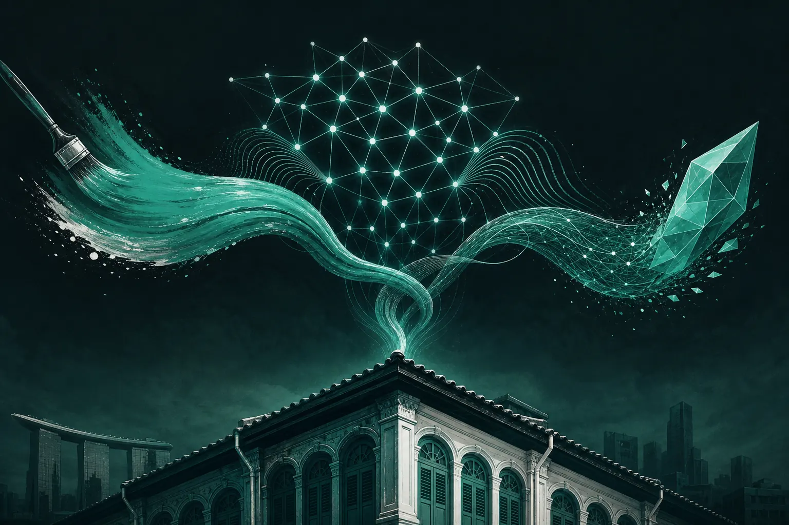

크리에이티브, 미디어, 브랜드 마케팅에서 AI의 역할

마케팅에서 AI의 역할은 분야마다 다릅니다. 크리에이티브에서는 아이디어의 폭을 넓히지만, 어느 것이 브랜드에 진실한지는 판단하지 못합니다. 미디어에서는 사람보다 빠르게 최적화합니다. 브랜드에서는 가장 위험합니다. 모든 브랜드를 같은 평균으로 끌어당기기 때문입니다. 사람의 일은 AI가 주도할 곳과 따라갈 곳을 결정하는 것입니다.
2025년 2월 24일 월요일 오후 5시, Marketing Mondays는 바로 이 질문을 주제로 Block71 Singapore에서 오프라인 세션을 열었습니다: "크리에이티브, 미디어, 브랜드 마케팅에서 AI의 역할". 세 명의 연사, 마케터로 가득한 한 공간, 그리고 지금까지도 기억에 남는 토론이었습니다. 2026년 8월 25일 다시 Block71을 찾았을 때 대화는 한 단계 나아가 있었지만, 그 밑바탕의 프레임워크는 여전히 유효했습니다. 이 글에서 그 프레임워크를 소개합니다.
왜 질문을 크리에이티브, 미디어, 브랜드로 나눌까요?
"마케팅 속 AI"는 너무 광범위해서 쓸모가 없기 때문입니다. 사람들이 AI가 걱정된다고 말할 때, 대개 세 가지 서로 다른 것 중 하나를 뜻합니다. 디자이너는 이미지 생성이 자신의 기술을 값싸게 만들까 걱정합니다. 미디어 바이어는 자동 입찰이 자신의 역할을 불필요하게 만들까 걱정합니다. 브랜드 리드는 모든 것이 똑같이 들리기 시작할까 걱정합니다. 이것들은 서로 다른 답을 가진 서로 다른 문제입니다.
크리에이티브에서 AI는 어디에 가장 도움이 될까요?
AI는 선택지의 폭을 넓히는 데 탁월합니다. 브리프를 주면 팀이 일주일 동안 스케치할 수 있는 것보다 더 많은 방향을 내놓습니다. 유용하지만, 바로 그것이 함정이기도 합니다. 선택지가 많다고 더 나은 결정이 되지는 않습니다. 더 어려운 결정이 될 뿐입니다.
가치가 커지는 크리에이티브 역량은 선택입니다. 어떤 아이디어가 오디언스의 긴장에 진실하고 어떤 아이디어가 그럴듯하기만 한지 아는 것입니다. 그 판단은 실제 사람들이 무엇을 중요하게 여기는지에 대한 근거에 달려 있습니다. 자매 브랜드 GPT3 Marketing은 생성형 AI 초창기부터 이 문제에 매달려 왔으며, 그 방법론 전체가 오디언스가 실제로 반응하는 것에 프롬프트와 브랜드 보이스를 기반하는 데 있습니다.
간단한 크리에이티브 원칙
AI가 생성하고, 근거가 후보를 추리고, 사람이 선택합니다. 세 단계 중 하나라도 빠지면 품질이 떨어집니다.
미디어에서 AI는 어디에 가장 도움이 될까요?
미디어는 AI가 가장 성숙한 실적을 쌓은 분야입니다. 입찰, 예산 페이싱, 오디언스 확장은 수년 전부터 기계가 주도해 왔습니다. 새로운 영역은 프로세스의 더 앞단에 있습니다. 비용을 쓰기 전에 어떤 크리에이티브가 주목을 받을지 예측하는 것입니다.
Marketing Mondays를 설립한 AI 오디언스 리서치 플랫폼 SOMIN은 이 집행 전 단계의 질문을 다룹니다. SOMIN의 유료 미디어 인텔리전스는 예산을 투입하기 전에 크리에이티브의 클릭 가능성을 점수화하므로, 미디어 시스템은 잘못된 소재를 효율적으로 확장하는 대신 올바른 소재를 최적화하게 됩니다. KPI Media 사례 연구는 한 에이전시가 이를 자체 워크플로에 어떻게 적용했는지 보여 줍니다.
왜 브랜드가 AI를 쓰기에 가장 위험한 영역일까요?
대규모 언어 모델은 가장 가능성 높은 다음 단어를 생성하도록 학습됩니다. 브랜드 관점에서는 가장 평균적인 메시지를 뜻합니다. 모든 경쟁사가 비슷한 프롬프트로 같은 도구를 쓰면, 카테고리 전체가 수렴합니다. 리스닝 데이터를 보면 마케터들은 이미 이를 느끼고 있습니다. AI 생성 콘텐츠로 모두가 비슷하게 들리는 획일성의 바다, 그리고 내러티브를 쌓기보다 트렌드를 좇으려는 본능입니다.
해답은 브랜드 업무에서 AI를 피하는 것이 아닙니다. 경쟁사가 갖지 못한 것을 AI에 제공하는 것입니다. 오디언스의 긴장에 대한 구체적이고 근거 있는 이해, 그리고 기꺼이 지켜 낼 명확한 내러티브입니다.
프레임워크: 누가 주도하고, 누가 따라가는가?
- 크리에이티브: 생성은 AI가 주도하고, 선택과 완성도는 사람이 주도합니다.
- 미디어: 최적화는 AI가 주도하고, 무엇을 입력할지 그리고 플랫폼 지표가 아닌 수익은 사람이 주도합니다.
- 브랜드: 내러티브는 사람이 주도하고, AI는 일관성과 규모를 위한 도구로서 따라갑니다.
- 리서치: 대량의 정보를 읽는 일은 AI가 주도하고, 무엇이 중요한지 해석하는 일은 사람이 주도합니다.
현장에서는 어떤 반론이 나왔을까요?
그대로 기록하지 않은 발언을 특정인의 말로 인용하지는 않겠지만, 청중석에서 몇 가지 주제가 반복해서 나왔습니다.
"AI는 누가 검증합니까?"
여러 마케터가 검증할 수 없는 AI의 결론을 우려했습니다. 타당한 답은 이렇습니다. 결론을 그 뒤에 있는 실제 게시물이나 데이터까지 추적할 수 있게 해 주는 도구만 신뢰하십시오. 확인할 수 없다면 내보내지 마십시오.
"주니어 역할은 어떻게 됩니까?"
리사이징이나 초안 작성처럼 과거 주니어를 훈련시키던 업무가 바로 자동화되고 있는 업무입니다. 팀에는 판단력을 일찍부터 의도적으로 가르치는 방법이 필요하며, 동료 커뮤니티가 그 답의 일부입니다.
"브랜드는 여전히 우리 것입니까?"
브랜드 리드들은 내러티브의 주인 의식은 위임할 수 없다고 분명히 말했습니다. AI는 같은 말을 여러 방식으로 하도록 도울 수 있습니다. 하지만 여러분이 무엇을 지향하는지는 결정할 수 없습니다.
이번 월요일에는 무엇을 해야 할까요?
진행 중인 프로젝트 하나를 골라 각 단계를 크리에이티브, 미디어, 브랜드, 리서치로 분류하십시오. 각 단계마다 현재 누가 주도하는지(사람인지 기계인지), 그리고 위 프레임워크에 따르면 누가 주도해야 하는지 적으십시오. 대부분의 팀은 판단이 필요한 일을 AI가 주도하는 단계 하나(대개 브랜드 톤)와, 기계가 맡을 수 있는 일을 아직 사람이 하는 단계 하나(대개 리포팅)를 발견합니다. 그 둘을 맞바꾸면 실질적인 첫걸음이 됩니다.
용어 정의
- 크리에이티브 클릭 가능성: 미디어 비용 집행 전에 크리에이티브가 참여를 얻을 가능성을 예측한 값.
- 획일성의 바다: 브랜드들이 비슷한 메시지로 수렴하는 카테고리. 흔히 획일적인 AI 결과물로 가속화됩니다.
- 오디언스 긴장: 실제 사람들이 표현하는 반복적인 갈등이나 페인 포인트로, 브랜드가 해결할 수 있는 것.
첫 Block71 세션 이후 무엇이 달라졌을까요?
2026년 8월 다시 모였을 때, 대화는 "AI를 써야 할까"에서 "AI를 중심으로 어떻게 조직할까"로 옮겨 가 있었습니다. 이것이 2027년 마케팅 팀의 모습을 다루는 다음 세션에 가져갈 질문입니다. 사전 자료는 2027년 마케팅 팀 시그널에서 읽으실 수 있습니다.
다음 모임에 참석하고 싶다면, Marketing Mondays WhatsApp 커뮤니티 "Marketing Mondays @ Block71"에서 세션 소식을 가장 먼저 받아 보실 수 있습니다. ask@mondays.marketing으로 초대를 요청하십시오.
자주 묻는 질문
AI를 주제로 한 Marketing Mondays Block71 패널은 언제 열렸습니까?
2025년 2월 24일 월요일 오후 5시 Block71 Singapore에서, 크리에이티브, 미디어, 브랜드 마케팅에서 AI의 역할을 주제로 3인 패널이 열렸습니다. 2026년 8월 25일에도 Block71 세션이 열렸습니다.
브랜드는 브랜드 전략에 AI를 써야 합니까?
일관성과 규모를 지원하는 데 AI를 쓰되, 내러티브 결정은 사람이 하십시오. 평균으로 학습된 AI는 구체적인 오디언스 근거에 기반하지 않으면 브랜드를 획일성 쪽으로 끌어당기는 경향이 있습니다.
미디어 바잉에서 AI는 어디에 가장 도움이 됩니까?
최적화, 그리고 점점 더 돈을 쓰기 전에 어떤 크리에이티브가 성과를 낼지 예측하는 데 도움이 됩니다. 그래야 자동화 시스템이 올바른 소재를 확장합니다.
초대 요청
Marketing Mondays는 마케터, 창업자, 에이전시 팀이 모인 싱가포르 커뮤니티이자 주간 YouTube 쇼입니다. 의견이 아닌 실제 경쟁사·오디언스 시그널, 그리고 이를 함께 검증할 동료들이 있습니다.
ask@mondays.marketing으로 이메일 보내기 →